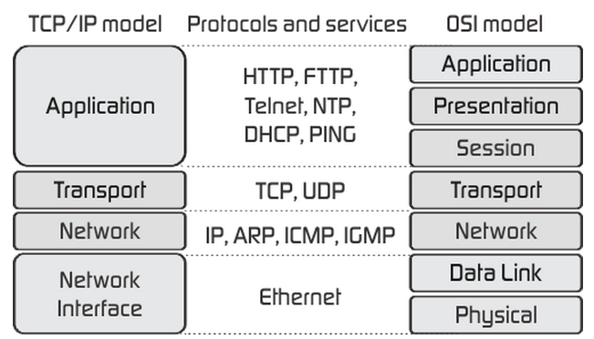

TCP/IP referentni model
TCP/IP (Transmission Control Protocol and Internet Protocol) je mrežni model koji se koristi na današnjoj arhihekturi interneta.
Razvijen je od strane američke vojske (Defencećs Project Research Agency) s idejom da mreža bude lakoa za nadograditi i gotovo nemoguća za uništiti
Glavna značajka TCP/IP modela je fleksibilna arhihektura tj. dodavanje novih računala u mrežu je relativno lako. Mreža bi opstala prilikom nekih gubitka čvorova tj. komunikacija bi i dalje bila moguća.
TCP/IP sastoji se od četiri sloja:
Na sljedećij slici možemo vidjeti TCP/IP i OSI modele i protokole te njihove pripadajuće slojeve:
